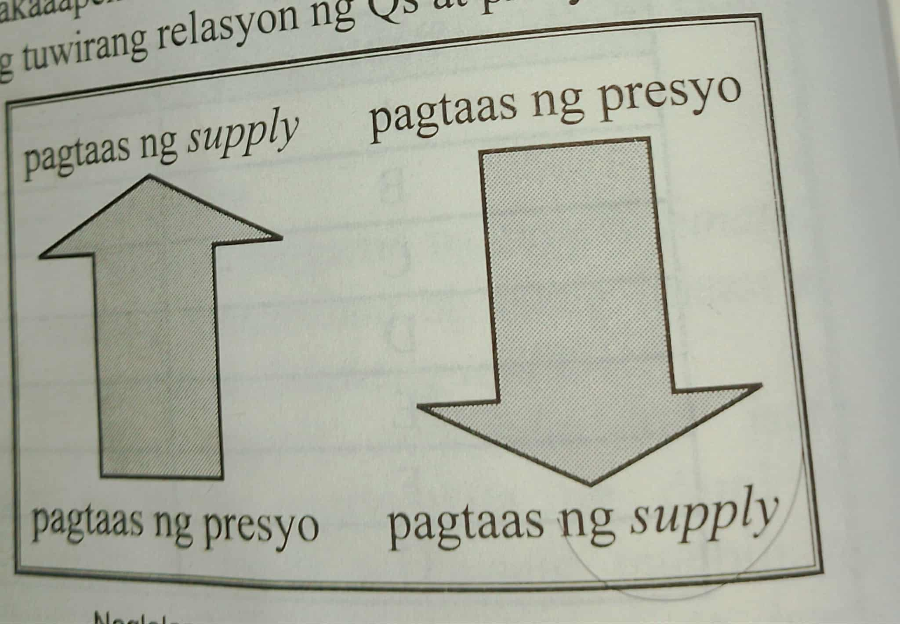
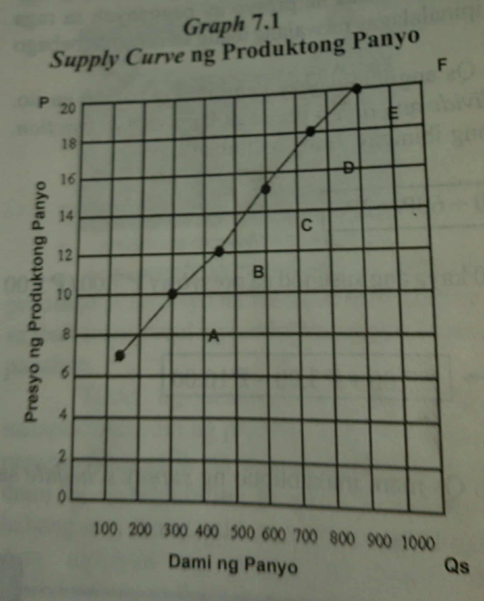

Tumutukoy sa dami ng produkto at serbisyo na handa at nais ipagbili sa iba't ibang lebel ng presyo sa isang takdang panahon
Talahanayan na nagpapakita ng dami ng produkto na handa at kayang ipagbili ng prodyuser sa iba't ibang presyo sa isang takdang panahon
Sa pamamagitan ng mathematical equation ay maipapahayag ang ugnayan ng presyo at supply. Ito ang nagpapakita ng ugnayan ng dalawang variables, ang Qs(quantity supplied) at P(Presyo). Ang Qs ay maaring tumaas o bumaba sa bawat pagbabago at pagtaas at pagbaba ng P.
Ang ceteris paribus ay salitang latin na nangangahulugang "all other things remain constant" o walang ibang salik na nagbabago. Presyo lamang ang nakaaapekto sa Qs.
Ang Supply curve ay isang grapikong paglalarawan ng tuwirang relasyon presyo at dami ng handang ipagbiling produkto ng mga prodyuser.
Ito ay tumutukoy sa paggamit ng makabagong kaalaman at kagamitan sa paglikha ng mga produkto
Ang dami ng tindera ng isang produkto ay dahilan ng pagdami ng supply ng nasabing produkto.
Tulong na ipinagkakaloob ng pamahalaan sa mililiit na negosyante at mga magsasaka upang paramihin ang kanilang produksiyon at pataasin ang supply ng mga produkto
May iba't ibang gastusin ang nakapaloob sa paglikha ng mga produkto.
Ang supply ng produkto ay naaayon sa kalagayan ng panahon sa isang lugar
Kapag ang presyo ng produkto ay tumaas, ang mga supplier ay nagaganyak na magbili ng nasabing produkto.
Dahil sa inaasahan na pagtaa ng presyo sa darating na araw bunga ng mga pangyayari sa kapaligiran, ang mga prodyuser ay nagbabawas ng supply ng produkto na nagiging dahilan ng pagbaba ng supply
 